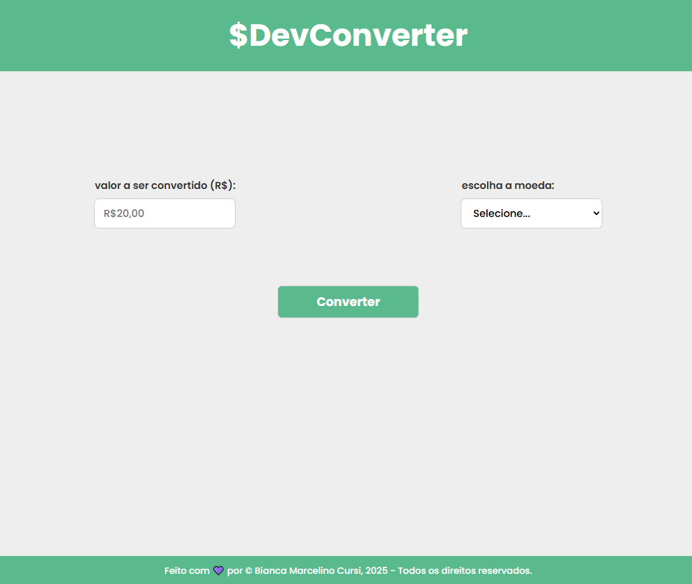
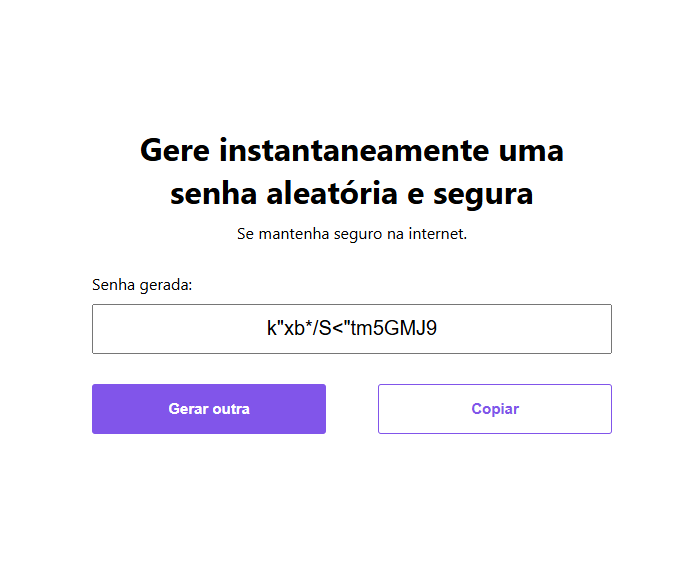
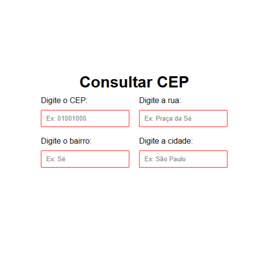

Dev Converter
Conversor de Moedas Estático. Este é um projeto front-end de um conversor de moedas simples, que converte valores de Real (BRL) para 5 moedas estrangeiras. Ferramentas: HTML, CSS, Javascript puro e manipulação do DOM.
Em transição de carreira.
Olá, sou a Bianca (ou Bia), tenho 28 anos e moro em Guarulhos/SP. Depois de uma boa caminhada na área administrativa, decidi virar o jogo e mergulhar no universo da tecnologia, e não poderia estar mais empolgada! Hoje sou desenvolvedora Front-End júnior em formação, com conhecimento em HTML, CSS, JavaScript e APIs REST, e estou dando meus primeiros passos com jQuery e Figma. Meu próximo desafio? Aprender React e expandir ainda mais meu repertório técnico. Gosto de ambientes colaborativos, códigos limpos e interfaces que fazem sentido para quem usa. Ah, e um bom café sempre acompanha meus momentos de foco! Bora codar? 🚀💻✨

Conversor de Moedas Estático. Este é um projeto front-end de um conversor de moedas simples, que converte valores de Real (BRL) para 5 moedas estrangeiras. Ferramentas: HTML, CSS, Javascript puro e manipulação do DOM.
Este é um projeto de landing page estática para um produto fictício. O objetivo foi criar uma página de vendas (One-Page) atraente, moderna e responsiva, utilizando apenas HTML5 e CSS3.

Um simples gerador de senhas front-end que consome uma API externa para buscar senhas aleatórias e seguras, permitindo também a cópia fácil para a área de transferência.

Este projeto é uma aplicação web simples que permite ao usuário buscar informações de endereço a partir de um CEP válido. O objetivo principal é demonstrar o consumo de APIs externas e manipulação do DOM com JavaScript.